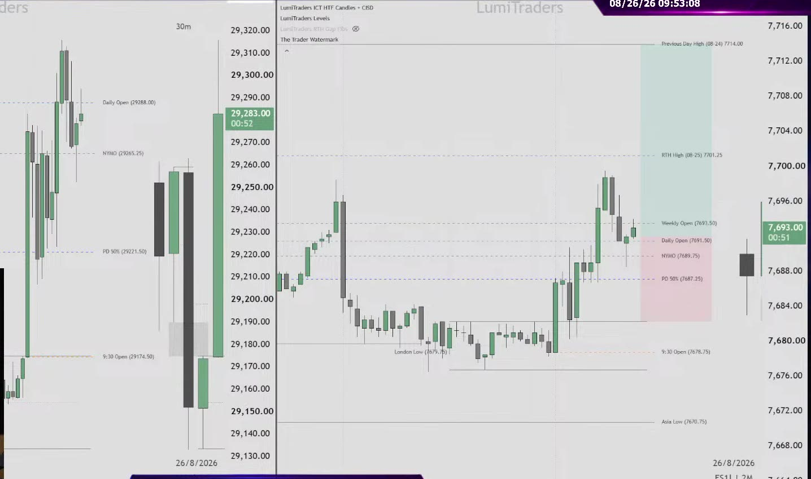
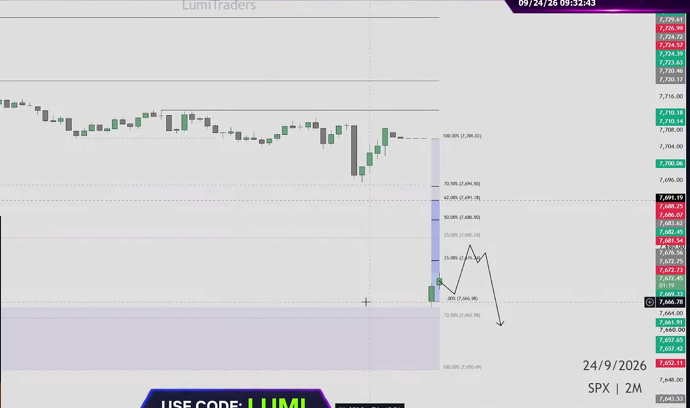
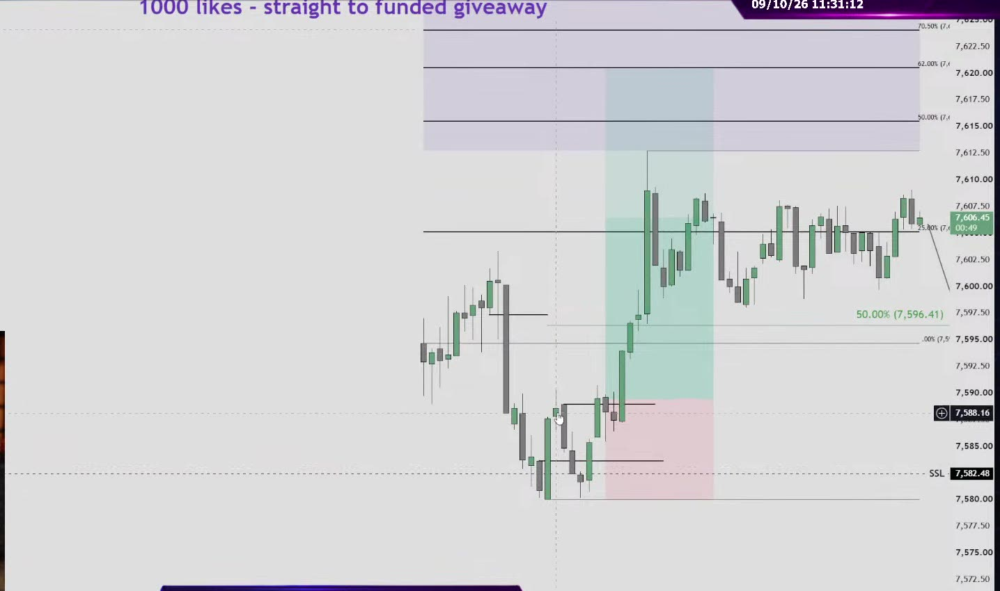
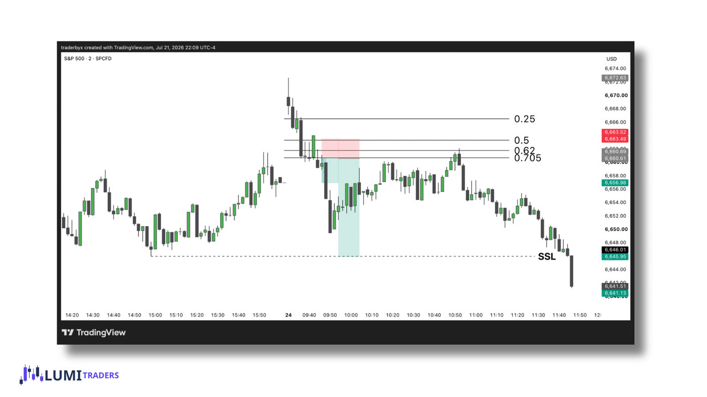
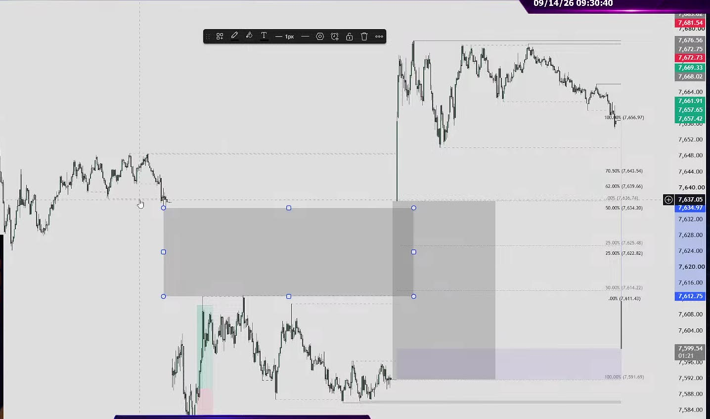
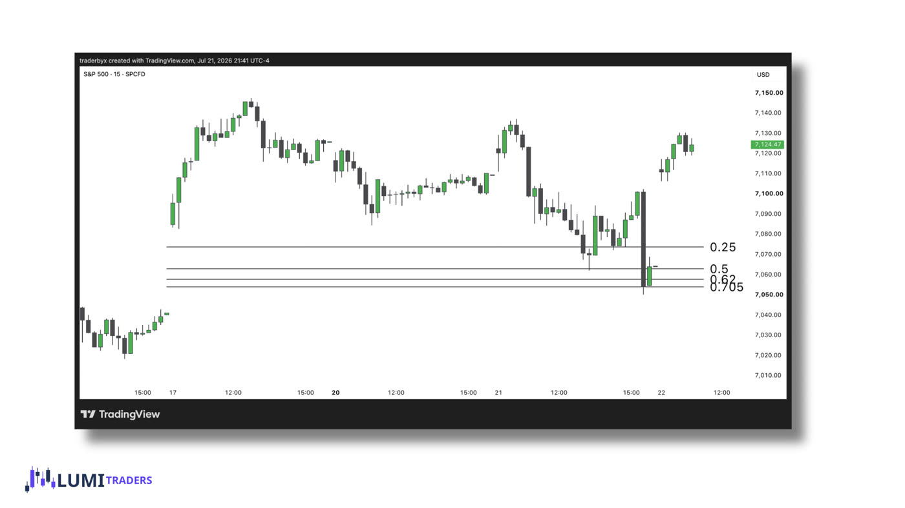
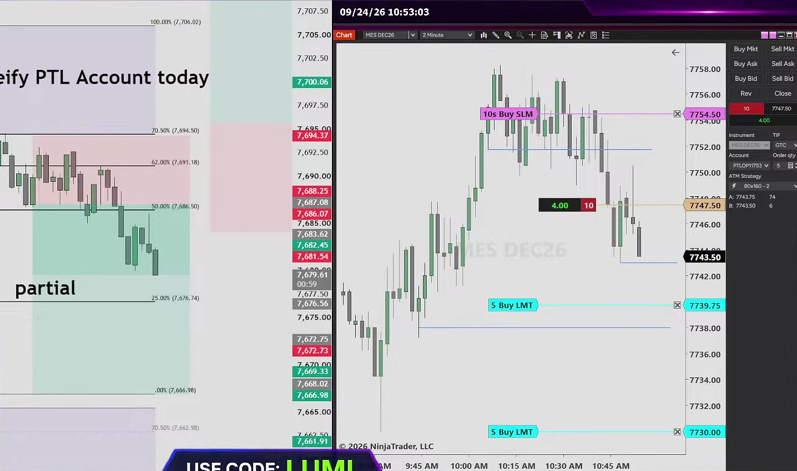

Contents
- Overview
- The model in 2 minutes
- Your setup & indicators
- The words you need
- The RTH gap
- Is today tradeable?
- The first 30 minutes
- A · Shallow 25–50%
- B · Sweep → OTE
- C · 70.5% break
- D · After the fill
- E · Overlap gap
- F · Old gaps
- The entry: 2-min CISD
- SPX levels → ES orders
- Managing the trade
- Risk rules
- Two real days, step by step
- Your daily routine
- Pre-trade checklist
- Test yourself
- When she does not trade
- 29 sessions reviewed
- Your 4-week plan
- Sources
01 / Overview
Trade the SPX opening gap the way LumiTraders does
She calls it "my SPX strategy". It is the model she trades on almost every New York morning. Draw yesterday's close and today's open on the S&P 500 cash index, watch what price does with the nearest liquidity after 9:30, and trade the pullback into four fixed levels of that gap on ES futures, entering only on a 2-minute confirmation candle.
Chart SPX, trade ES
Levels come from the SPX cash index (TradingView symbol SPCFD:SPX). Orders go in on MES micro futures. She says the same levels drawn on ES "work like 30–40% of the time".
9:30 – about 11:30 ET
She is live 9:00–11:30. Most entries come between 9:45 and 11:00. Right now she prefers to wait until 10:00 before acting on the open.
Four levels, one trigger
25%, 50%, 62% and 70.5% of the gap. The only entry signal is a 2-minute CISD (change in state of delivery), entered at the open of the next candle.
How to use this guide
Read sections 01–07 once, in order. Then study one playbook at a time with the diagrams, using the Gap up / Gap down switch on each diagram. Work through the two real days in section 18, then take the quiz. Mark each section as understood at its end; your progress shows in the left column and is saved in this browser.
Where the model came from
She first built it for ES and for options. On Sep 17 she said it "stopped working [on ES] almost two years ago", so she tested QQQ, SPY and SPX and found only the SPX levels held. Her explanation is that SPX has no overnight session, so its gap is clean. She made it her main model in August 2026 after a bad month: "only SPX was like bright light in this dark room."
- "This strategy has 60% win rate" (Sep 16) and "~60% this year" (Sep 18).
- "63% win rate, 1.3R average, over 12 months" (Sep 8).
- "76% on the SPX model over 12 months" (Sep 29).
Plan around roughly 60% wins at 1–1.3R. That is a real edge if you follow the rules and a losing system if you don't. In the 29 sessions reviewed here, nearly every loss came from breaking one of her own rules, not from the model.
Personal study aid. Lesson charts © LumiTraders / Funded.Now; stream screenshots from her public YouTube streams. Not financial advice.
02 / Quick start
The whole model in 2 minutes
Every trading day runs through the same six steps. The rest of this guide explains each one.
Set the bias
Daily objective, ES and NQ vs. their opens, old SPX gaps.
Measure the gap
On SPX. Under 10 points: no SPX trade today.
Watch liquidity
Did price take the nearest 15-minute high or low?
Pick the playbook
Not taken → 25–50%. Taken → OTE. Close past 70.5% → fill.
2-min CISD
In the zone, on SPX, with NQ agreeing. Enter the next open on MES.
Manage, then stop
Partial at +10 pts or the next level, then break-even. Max 2 losses.
If you remember only five rules
- No model, no trade.If price leaves without pulling back into the zone, you missed it. "If it goes up without me, it goes up without me."
- Gap under 10 points means chop.Skip the SPX model that day, or use an older gap.
- A level is a place to look, the 2-minute CISD is the trigger.Never enter just because price touched 25% or 62%.
- NQ must agree.If ES and NQ point opposite ways, skip or trade half size on an evaluation account.
- Two losses and you're done.Daily cap: $200–250 on a 50K account.
03 / Your setup
What you need on your screen
She runs three charts side by side: SPX 2-minute for the levels, ES 2-minute for execution, and NQ for confirmation. Everything is free except the futures account.
| Chart | Symbol | Timeframe | Used for |
|---|---|---|---|
| SPX | SPCFD:SPX on TradingView (free, "S&P 500 index cfd") | 2-minute | The gap, the fib levels and the CISD trigger. Every decision is made here. |
| ES / MES | MES1! or ES1! | 2-minute | Placing the order. She uses MES micros: $5 per point. |
| NQ | NQ1! | 2-minute + 30-minute | Confirmation. If NQ points the other way she skips or trades smaller. |
| Higher timeframe | ES / SPX | 15m, 1H, 4H, Daily | Bias and "HTF levels": old gaps, order blocks, equal highs/lows, previous day high/low. |

The three indicators (free, by LumiTraders)
LumiTraders RTH Gap Fibs
Draws today's gap and its levels, keeps old unfilled gaps on the chart and shades overlap zones. A level turns red when a 2-minute candle closes through 70.5%.
LumiTraders Key Levels
Asia, London and NY session highs/lows; daily, weekly and monthly opens; NY midnight open; 9:30 and 10:00 opens; previous day 50%; equal highs and lows.
ICT HTF Candles + CISD
Higher-timeframe candles next to price, with CISD levels marked. Mostly for her separate gold "liquidity sweep" model.
Settings for RTH Gap Fibs
| Setting | Value | Why |
|---|---|---|
| Levels | 0.25 0.5 0.62 0.705 plus 0 and 1 | The only four levels she trades. |
| Anchors | 0% on the 9:30 open, 100% on the prior close | On her live charts 25% is always the line nearest the open. If yours is reversed, switch "Invert anchors". |
| Prior close | The 4:08 PM print | "I always backtested with 4:08 closure." The cash index keeps printing a few minutes after 4:00. |
| Chart | SPX 2-minute | "Two minute chart only on SPX because I backtest on this time frame." |

04 / Vocabulary
The words you need
She speaks in ICT terms. These are the only ones the model depends on.
Regular trading hours gap
The price space between yesterday's SPX close (4:08 PM) and today's 9:30 open.
Buy-side / sell-side liquidity
Obvious highs (BSL) and lows (SSL) where stop orders sit. Only swings visible on the 15-minute chart or higher count.
Optimal trade entry
The 62%–70.5% zone of the gap. The deepest pullback she trades into.
Change in state of delivery
Her entry trigger: a 2-minute candle closes beyond the open of the run of opposite-coloured candles that started at the key level. Full explanation →
Order block and its 50%
To her the OB is the same thing as the CISD: the box around that run of candles. Its 50% line is the "mean threshold". Price closing through it means the setup is failing.
A fast, strong candle
A large-body candle moving away from a level. The CISD should come with displacement; slow confirmations are where she loses.
Higher-timeframe level
A level from the 15-minute chart or higher: old SPX gap, previous day high/low, daily order block, weekly open. Reversals must start from one.
Reference opens
Price at 00:00 ET (NYMO) and at 10:00 (start of the 4-hour candle). Above both = bullish context, below both = bearish.
ES and NQ disagree
One bullish, one bearish (e.g. ES below its NYMO, NQ above). Her rule: stay away, trade smaller, or use an evaluation account.
Risk unit
1R = the amount you lose if stopped. A +1.5R trade made 1.5 times what it risked.
05 / The map
The RTH gap and its four levels
At 9:30 the gap is drawn from the open back to yesterday's close. The levels measure how deep price has pulled back into the gap, counted from the open. They are the map for the whole morning.
| Level | Name | What she uses it for |
|---|---|---|
| 25% | Shallow pullback | Entry zone in Playbook A. First partial-profit level. After a reversal it becomes support/resistance, and a 2-minute close back through it is a signal of its own. |
| 50% | Middle of the gap | Bottom of the A zone. Common stop on big gaps. "50% offers a reaction, but doesn't offer a real move." |
| 62% | OTE start | Target of the reaction trade in Playbook B. Her "A+" entries come from here. |
| 70.5% | OTE end: the line in the sand | A 2-minute close beyond it means the gap will most likely fill completely (Playbook C). |
Gap calculator
Enter yesterday's SPX close and today's SPX open to get the gap size, its grade and every level.
Default values are her real Sep 24 gap: 39 points down, inside an older unfilled gap. She shorted from the OTE that day (section 18).

06 / Filter
Is today tradeable?
Before acting she decides whether the model is "on" today and how big to trade. These filters came up again and again across the 29 sessions.
| Condition | What she does | Her words |
|---|---|---|
| Gap < 10 pts | No SPX trades, or a small scalp at most. Never on funded accounts. Often trades NQ or gold instead. | "Anything less than 10 points it's most likely going to be chop session." |
| Gap 10–60 pts | Normal. About 20–40 points is ideal. | "Big gap to work with… we have something to work with." |
| Gap > 60 pts | Not backtested. Micros only. Accepts a reaction slightly before 25%. | "I did not back test this kind of gaps, huge gaps." |
| Opens far from liquidity | No 15-minute+ liquidity nearby, so Playbook A does not apply. | "We opened in the middle of nowhere." |
| ES / NQ decoupled | Sit out, or minimum size on an evaluation account. | "Decoupled equals stay away." |
| Wrong side of 10 AM open | After 10:00, shorts only below the 10 AM open and longs only above it. | "Don't short above 10 a.m. open. Vital mistake." (Aug 24 loss) |
| News, FOMC, Friday, month-end | Wait for the hourly close after 10:00 news. Smaller size. FOMC: only after 3 PM or not at all. | "Most biggest losses happens on Friday." |
| Trend day | NYMO already tested 3–7 AM and price far away from it: expect shallow pullbacks. Do not fade it. | "When we have trend day I cannot win." |
| Gap fills instantly | Downgrade every signal that day from A+. | "Could be A+… if it wasn't like immediate fill of the gap." |
| No SPX session yesterday | No trade the day after a cash-market holiday. | "SPX was closed… does not have data to work with today." |
Setting the bias before 9:30
- Start from the daily and 4-hour chart
Where is the higher-timeframe objective? Previous day high/low, weekly open, an old unfilled SPX gap, a daily order block or FVG.
- Check the opens on ES and NQ
Above or below the daily open (6 PM), the NY midnight open and the weekly open? Above all of them is bullish. Split means decoupled.
- Apply the NYMO timing rule
If the midnight open was not retested between 3 and 7 AM, expect a retest after 9:30, usually before 10:30–11:00. She cites about a 70% hit rate from 6 months of data.
- Mark old SPX gaps
Unfilled gaps from previous days, and gaps that "missed 25% by a tick", act as magnets and targets.
- Write down two scenarios
On Sep 21 she drew them in pink and black before the open: "fail to take buy side → 25–50% → long" versus "take buy side within 15 minutes → fill old gap → short to the OTE".
07 / Decision
The first 30 minutes pick the playbook
Her most important question, live on Aug 25: "Did we take near liquidity level first 15 minutes on S&P? You need to answer this question before entering the trade." Since July she gives it until 10:00, when the first 4-hour candle closes, before acting.
For a gap up it is usually buy-side above the open. For a gap down, sell-side below. A small high or low printed after 9:30 does not count.
Wait for a 2-minute CISD inside 25–50%. Target the liquidity that was not taken.
Playbook A →Trade the reaction from the sweep to the OTE, then possibly the reversal from the OTE.
Playbook B →Trade the continuation to yesterday's close and the opposite liquidity.
Playbook C →"If it goes up without me, it goes up without me. No model entry." If price leaves the gap without pulling back into the zone, there is no trade. On Sep 28 she watched a textbook move happen without her because price never pulled back, and still called it a good day.
08 / Playbook A
Liquidity not taken → trade the 25–50% pullback
Price opens near a liquidity level but does not take it. The market still "wants" that level, so it pulls back into the shallow part of the gap and then goes to get it.
- Price fails to reach the buy-side abovesell-side below in the first 15–30 minutes.
- It pulls back into 25–50% of the gap (blue zone).
- A 2-minute candle closes abovebelow the open of the first candle that touched 25% (the blue CISD line).
- Enter at the next candle's open. Stop beyond the swing (red box). Target the liquidity that was not taken (green box).


09 / Playbook B
Liquidity taken → trade to the OTE, then from it
Price takes the nearest liquidity within 15 minutes. That sweep is the "fake move", and now she expects a deep pullback to 62–70.5% of the gap. This gives up to two trades.
- Price takes the buy-side abovesell-side below in the first minutes.
- A 2-minute CISD back into the gap. Trade 1: shortlong at the next open, stop beyond the sweep, target 62%.
- Price reaches the OTE (amber zone). Her model is "done" here; she exits on funded accounts.
- Trade 2, optional: a new 2-minute CISD at the OTE, aimed at the higher-timeframe level. Skip it if that level was already hit.



10 / Playbook C
2-minute close past 70.5% → the gap fills
If price drives straight through the OTE and a 2-minute candle closes beyond 70.5%, the gap stops being a reversal map and becomes a continuation map. She calls the fill "nine of 10 times… guaranteed".
- Price runs into the OTE without stopping.
- A 2-minute candle closes belowabove 70.5%. Her indicator turns the level red.
- Enter on that close. Stop beyond 50% (or 25% to be safer). Target 1 is yesterday's close (full fill); target 2 is the sell-side belowbuy-side above.


11 / Playbook D
After the fill: the trade back, then the break of 25%
Once the gap is filled and the opposite liquidity is taken, she keeps trading the same gap as a ladder of follow-ups. Her biggest day in this review (Aug 28) came from this.
- The gap is filled and the sell-sidebuy-side beyond it is swept, at a higher-timeframe level.
- A 2-minute CISD back the other way. First trade: target 25% of the gap.
- A 2-minute close back through 25%. Second trade: stop beyond the OTE, target the higher-timeframe level.
"If gap has been filled while the main HTF objective remains open, look for a reversal after price takes BSL or SSL." If the break of 25% chops instead of expanding, stay away.


12 / Playbook E
The overlap gap
Sometimes SPX opens inside an older gap that never filled. Old unfinished business plus a fresh imbalance at the same price: she calls it "one of the highest-probability setups".
- An older gap is still partly unfilled (gray, left).
- Today opens inside it. Use only the overlap of the two (blue) and put 25% and 50% on that overlap.
- Price reaches 25–50% of the overlap and a 2-minute CISD forms. Trade away from it.

13 / Playbook F
Old gaps and "delayed delivery"
When today's gap is too small she does not force it; she uses older SPX gaps instead. And when yesterday's setup ran out of time, she expects today's open to finish it.
Today's gap is under 10 points
- Use an older unfilled SPX gap. Its 25–50% is the entry zone; its OTE is a "sell zone" (or buy zone).
- That old gap's 70.5% is the invalidation.
- Sep 8: 1-point gap. Long from 25–50% of an old gap plus a 15-minute FVG. Result: 1R.
Yesterday's move did not finish
- "If SPX didn't have time to hit main objective yesterday… we may anticipate continuation at the open and it's going to leave gap open."
- Grade B+: fewer accounts, smaller size.
- Sep 30: long at the open, closed +16–20 points.

14 / The trigger
The entry: a 2-minute CISD
Every playbook uses the same trigger. The level tells you where to look; the CISD tells you price has actually turned. She never enters "simply because price reached a Fibonacci level".
- Price reaches the key level (gap 25–50%, the OTE, or an HTF level).
- Find the first down-closeup-close candle that touched the level and mark its open: that is the CISD line.
- A 2-minute candle closes abovebelow the line with a strong body. That is the CISD.
- Enter at the next candle's open. Stop beyond the swing. The dashed box is the order block; its middle line is the 50% mean threshold, which must hold.
Her rules for a valid CISD
Start at the key level
"The very 1st candle that tapped HTF level." With a long run of candles, use the first one that touched the level, not the whole sequence.
Be a body close, with displacement
"Normally when we expect expansion, order block forms really quick with displacement candle… most my losses happens in this kind of situation" (the slow ones).
Hold its 50%
"For a bullish order block, we do not want to see price close below its 50% level." A close through the mean threshold means it is failing.
Print on SPX
Confirmation on SPX first, then ES follows. "Waiting for S&P levels, not for ES levels."
Bodies or wicks
Long wicks: use only the bodies. Small wicks: use the full range. "We have long wicks. So I'm going to use only body."
V-shapes and "from nowhere"
A V-closure is "technically valid but not valid". An OB that did not start at a level is only paper-traded. An FVG or IFVG alone is never an entry.


15 / Execution
SPX levels → ES orders
You cannot trade the SPX index with futures, and SPX and ES trade at different prices. She does not translate prices; she translates distances.
- Measure on SPX
Entry, stop and target in points on the SPX chart. Example: stop 7 points, target 14 points.
- Fill on ES at market
When SPX triggers and ES confirms, place a market order on MES. No limit orders before the order block exists.
- Apply the distances to your ES fill
"If your stop loss according to S&P 7 points, your entry at 7747, you need to add seven points… 7754." Set ES targets about 1 point early: "ES loves to play games."
- Manage by SPX
"Since the stop according to SPX, will partial according to SPX as well." Take the partial when SPX hits the level, even if ES has not.
Order calculator
Turns an SPX setup into ES/MES stop and target prices and a contract count for your dollar risk.
16 / In the trade
Managing the trade
Pay yourself early
- First partial at +10 ES points ("my base hit") or the next SPX level: 25% of the gap, the top of the gap, or 62%.
- Trade at least 2 micros so a partial is possible.
- "Small partials always pay."
Only after a partial
- "I never moved to break even while I was in trade without partial."
- Exception: before 10:00 she moves to break-even early to avoid the "10 a.m. manipulation".
At levels, not at profit
- "Simply because I'm in profit does not mean I need to trail… I trail when we hit key level."
- Trail behind protected highs/lows or the OB's 50%.
1–1.5R in the morning
- "I almost never go for 2R" on funded accounts in the AM.
- Exit ES when SPX hits its HTF level, even if ES has not.
- Re-entering the same idea after a stop is allowed while the structure holds, at half risk.
She moved her stop "without any significant reason". It was hit for +$15 to the tick, then price ran to her target. "No reason to close early, you always can partial." Move the stop only at a level.
17 / Survival
Risk rules
She trades prop-firm accounts and copies each trade across 20–35 of them. These limits are per account and were consistent across the streams.
| Account | Max loss per day | Typical trade | Target |
|---|---|---|---|
| 25K | $200 | 2–3 MES | 1.2–1.5R |
| 50K | $200–250 (first trade ~$150) | 3–4 MES, 7–10 point stop | 1–2R |
| 150K | $400–450 | 4–6 MES | 2–3R |
No model, no trade
"Rule number one. Sometimes you're going to miss the trade."
Two losses and done
"Once I took two losses in a row, I usually done for the day." She locks the accounts.
Size by grade
A+ = normal risk. B/B+ = half. C = skip. Re-entry after a stop = half risk.
Size by stop
A wide stop means fewer micros, never more dollars. $250 with a 12-point stop = 4 MES.
Doubtful = evaluation
Questionable or decoupled setups go on an evaluation or practice account, never a funded one.
No revenge
"Zero desire… to recover the loss." After a loss on a choppy day: "that's a sign for you, walk away."
18 / Worked examples
Two real days, step by step
These two days show the whole process from her live streams, with her own charts.
Sep 24 · Playbook B on an overlap gap · short · about +$500
- Pre-mktBias and plan
Weekly chart bullish, but a huge overnight drop. Her one rule for the day: "I'm going to only trade my strategy. If nothing will be presented, it's perfectly fine."
- 9:30Measure: 39-point gap down, inside an older gap
"Oh, huge gap. We have overlap gap. That's even better." She draws the levels and plans a bounce into the gap to sell: "looking for pullback right now to overlap gap on SPX."
9:32. Levels drawn; her pen line shows the bounce-then-sell plan. Shorts are only valid below 70.5%: "Longs above 70.5% only." - 10:15Price reaches the OTE and a 2-minute CISD forms
"We got huge sequence of up close candles… I'm not going to use entire sequence. I'm going to use the very first touch [of] my key level, which was OTE."

10:15. Price in 62–70.5% (7,691–7,694.50). The blue line under the last candles is the CISD. - 10:15–10:44She waits for NQ
NQ was still holding its 2-minute order block. "I wouldn't short until NQ will show any signs of reversal… market is not in sync." She waited almost 30 minutes.
- 10:44Entry: short 10 MES
NQ displaced through its 2-minute OB, which was her confirmation. Stop about 7–8 points above the swing. She graded it "A minus" because NQ was late, and did not copy it to funded accounts.
- 10:53Partial at 25% of the gap
"Since the stop according to SPX, will partial according to SPX as well." Then more partials at the next liquidity and the 9 AM open.

10:53. Left: the short with the partial at 25%. Right: her MES execution in NinjaTrader. - 11:13Exit, about +$500
Stop trailed to just above 25%. She would not re-short above 25%: "This 25% at this point is basically resistance."
Sep 17 · Playbook A on a 100-point gap · two longs · +10 points each
- Pre-mktBias: buy a pullback
"It's going to be huge gap on SPX, 100 points… I see no reason to look for longs without pull back to this gap." Equal highs sat above on SPX and NQ.
- 9:33Plan: wait for 25–50% because the equal highs were not taken
"Going down to 25–50% but fails to take buy side… After I drop to this area, I will wait for two minute order block." And: "62%? We're looking for 62% only if we took liquidity level."
9:33. "Key Area" = 25–50% of the gap. Her drawn path: drop into it, then up to the equal highs. - 10:14Long 1, half size (B setup)
The 2-minute OB turned about 5 points short of 25%, so she took 3 micros instead of 5. Stop 10 points under the 10 AM open: "10 a.m. open break means shift in structure." Partial at 62% of the up-leg, then break-even.
- 11:11Long 2 on a fresh order block
The first OB held its 50%. She entered on a 2-minute close above the last down-close candle, stop below the swing low, partial at the top of the SPX gap.
- 11:42Done
"First trade was 10 points, second trade 10 points. It's my base hits on ES."
19 / Step by step
Your daily routine
The order she works in on every stream. Times are New York.
- Bias from the higher timeframe 8:30–9:15
Daily and 4H: where is the objective? Mark previous day high/low, weekly open, old SPX gaps, daily OBs. Check ES and NQ against the daily open and NYMO. Note any 10:00 news.
- Write two scenarios 9:15–9:29
"If it fails to take X, I want 25–50% and long. If it takes X within 15 minutes, I want the OTE." Also write what would keep you out.
- Measure the gap 9:30
On SPX, with the calculator. Pre-market estimates from ES can be badly wrong (Sep 8: estimated 12 points, actual 1).
- Watch the liquidity 9:30–10:00
Don't trade the first candles. Was the nearest 15m+ liquidity taken? Pick the playbook.
- Wait for the zone and the CISD 9:45–11:00
Price must reach the zone. Then a 2-minute CISD on SPX with displacement. Check NQ and the 10 AM open.
- Run the checklist, then enter
Market order on MES at the next candle's open. Stop and target from SPX distances (calculator in section 15).
- Manage
Partial at +10 points or the first SPX level, then break-even. Trail only at levels.
- Stop for the day by ~11:30
After hitting your base target, after 2 losses, or when SPX "gives nothing". Trades near 12:00 are where she gets chopped.
20 / Before you click
Pre-trade checklist
Tick these before every entry. Ticks are saved in this browser for today only.
21 / Practice
Test yourself: what would she do?
Ten situations taken from her streams. Pick an answer to see her reasoning.
22 / Restraint
When she does not trade
Most of what she teaches on stream is what she skips.
| Situation | Why she skipped |
|---|---|
| Price leaves the gap without a pullback | "If it's going to be straight down at the open and nothing else, no trade." (Sep 28) |
| Price misses the zone by a tick | "It's all about enter this area." (Sep 16) |
| Valid SPX setup, NQ still the other way | "I wouldn't short until NQ will show any signs of reversal." (Sep 15, Sep 24) |
| CISD formed slowly, no displacement | "Most my losses happens in this kind of situation." (Aug 25) |
| Reversal "from nowhere" | "Same setup, but from here I will engage. From here, no thank you." (Sep 14) |
| Continuation from deep discount or premium | "Hate to short in deep discount or long in deep premium." (Sep 18) |
| Reward below 1R | "I don't want .5 R trade." (Oct 1) |
| Liquidity taken but only a 50% pullback | "Wait for OTE or no trades. That's the rules." (Sep 11) |
Her losses in these sessions, and why
| Date | Loss | What went wrong |
|---|---|---|
| Aug 21 | −$268 | Entered before her own trigger (no 70.5% break yet). |
| Aug 24 | −$350 | Short above the 10 AM open. "Vital mistake." |
| Sep 16 | −$145 | FOMC day, decoupled market, entered before the candle closed. |
| Sep 21 | −$160 | Counter-trend short while NQ was strong. "If I paid attention on NQ… I could avoid this loss." |
| Sep 23 | −$200 / −$300 | Trades outside the model and a stop moved for no reason. |
| Sep 25 | −$255 | Short before 10:00 without a 2-minute OB: "I trusted displacement." |
23 / Evidence
29 sessions reviewed
Every live stream from Aug 21 to Oct 2, 2026. Results are what she said on stream, per account. "Comp" = competition account with no drawdown limit, where she sizes up.
| Date | Gap | Playbook | Trades | Result |
|---|---|---|---|---|
| Aug 21 | ~30 up | C (planned) | ES short, entered early | −$268 |
| Aug 24 | down | Delayed delivery | MES short above 10 AM open | −$350 |
| Aug 25 | ~30 up, overlap | B | Skipped slow-OB short that worked; ES long | ~flat |
| Aug 26 | ~10–15 down | C (retest of 70.5%) | 2 ES longs | Win, 1.6R |
| Aug 27 | ~30 up | B (OTE missed by 1 pt) | ES long, B setup | Win |
| Aug 28 | ~6–10 up | C → D | Short (loss), long after 25% break | ~+$700 |
| Aug 31 | ~20 | None offered | Gold long instead | Small win |
| Sep 1 | large down | B | NQ long, SPX as context | Win |
| Sep 2 | ~3 up | F (old gap OTE) | NQ long BE, MES short partial | ~BE |
| Sep 3 | large down | B | 2 shorts, OTE-break long | ~+$945 |
| Sep 4 | tiny, filled | C (downgraded) | ES short, NQ short | Win |
| Sep 8 | ~1 | F (old gap 25–50%) | ES long | 1R |
| Sep 10 | 40+ down | B | ES long | ~1R |
| Sep 11 | overlap | No pullback | None | — |
| Sep 14 | large down, triple overlap | E | NQ short (loss), ES long | +$151 |
| Sep 15 | 7 | A (skipped, NQ) | Scratch | ~0 |
| Sep 16 | >10 up, FOMC | Missed A by a tick | NQ BE, ES short | −$145 |
| Sep 17 | ~100 up | A | 2 ES longs | +10 pts each |
| Sep 18 | small | C (retest of 70.5%) | ES short | Win |
| Sep 21 | large | Reaction at old gap | ES short, gold long | −$160 |
| Sep 22 | ~6 up | B scalp to 62% | ES short + continuation (comp) | +$181 |
| Sep 23 | small up | Off-model | 3 ES trades | −$200 |
| Sep 24 | ~39 down, overlap | E / B | MES short from OTE (comp) | +$500 |
| Sep 25 | small | B | Loss, then OB-50% short, long | ~+$300 |
| Sep 28 | ~20 down | No pullback | 2 ES BE, CL long | +$300 (oil) |
| Sep 29 | <10 | C | ES partial, NQ trades (comp) | +$1,051 |
| Sep 30 | <10, open | F (delayed delivery) | ES long | ~+$300 |
| Oct 1 | small up | A rejected, C missed | 3 trades (comp) | +$80 |
| Oct 2 | ~60 up | A | Short scalp, long, short | ~+$480 |
Several days were traded on evaluation or competition accounts only.
24 / Your plan
Your 4-week plan
She backtested in TradingView replay and logged every trade in TradeZella before trading it live. Do the same, in this order.
- Week 1: draw only
Every morning, open SPCFD:SPX 2-minute with RTH Gap Fibs. At 9:30 write the gap size, direction, nearest 15m+ liquidity and which playbook you expect. At 11:30 check what happened. No trades.
- Weeks 2–3: replay 50 days
TradingView bar replay on SPX 2-minute. Log the fields below for each day. Count only trades with a proper CISD in the zone.
- Week 4: paper trade live
Run the full routine with the checklist and simulated MES orders. Compare with her stream that day.
- Then: 1–2 MES on one evaluation account
Fixed $150 risk. Two losses and done. A+ setups only until you have 30 live trades logged.
Journal fields
| Field | Example (Sep 24) |
|---|---|
| Date / weekday | 2026-09-24, Thu |
| Gap size and direction | 39.04 pts down |
| Overlap with an old gap? | Yes |
| Liquidity in the first 15/30 min | Not near; price bounced into the gap |
| Playbook | E / B (reaction from the OTE) |
| NQ agrees? | Not until 10:44 |
| Grade | A− (NQ late) |
| Entry / stop / target (SPX) | OTE / +7 pts / 25%, then the old gap |
| Result | ≈ +$500 on 10 MES |
| Rule broken? | None |
She streams 9:00–11:30 ET. Seeing what she skips teaches more than any chart. Best explanation streams: Aug 25 "SPX for the win", Aug 26 (from 1:24:00), Sep 10 (from 1:28:30), Sep 24.
25 / Sources
Sources
- funded.now/lessons/spx-rth-gap: her written SPX RTH gap lesson (14 parts).
- Order Block / CISD, OTE and 10 AM Open lessons.
- funded.now/indicators: the three free indicators.
- YouTube live streams: 29 sessions (30 videos), Aug 21 – Oct 2, 2026, transcribed and reviewed.
- @LumiTraders on X: risk ladder, timing changes, statistics.
Funded.Now is her prop-firm affiliate site (code LUMI); treat firm recommendations there as advertising. Prices quoted from streams come from auto-generated transcripts and are approximate.